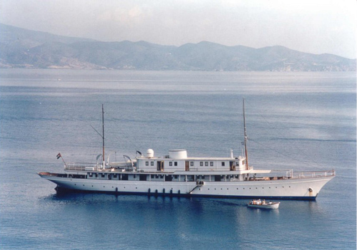
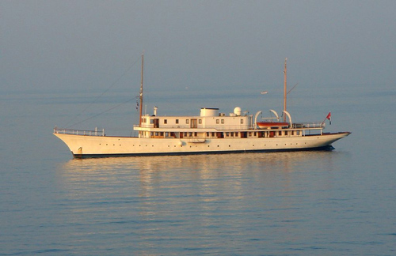

The ship used is the "Madiz", a 57 metre twin screw steel yacht built on the River Clyde in Scotland in 1902. An elegant, classic yacht which retains most of her original deck equipment and unique panelling: the original Burma teak on much of the deck and all the deck’s side panelings, Cuba mahogany in the original master bedrooms and solid oak paneling in the reception areas.

"Madiz" is privately owned and had not previously been used for commercial purposes until she was used in the filming of this episode.